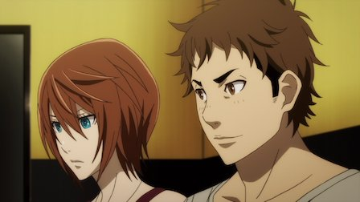

The opening scene shows two men and two women at a booth in a nightclub. They play a game, and one of the men wins. The other man jokes that the loser should do whatever the winner asks, referring to the second woman on the far side. "Don't go too far!" he jokes to his friend. Coldly, the winning man says the losing woman should have sex with him that night, despite it appearing that they hadn't met before. The other two are shocked, but even more shocked when the losing woman agrees without hesitation.This introduction to the 2018 anime "Doreiku" sets up the premise and thematic tone of the show. In modern day Tokyo, a rumor spreads of a device called an "S.E.M." that you put in your mouth. If two S.E.M. users play a game, the loser of the two becomes the winner's slave, and becomes obligated to do anything the master asks. Anything. And with no ability to escape the pact, unless the master purposely releases them, or unless another master "wins" them. It's a dark premise that fits in within an existing genre of high-stakes games and the thrill of the gamble: "Doreiku" feels a lot like "No Game No Life" or "Kakegurui," with the overtones of a gothic thriller like "Death Note," "Future Diary," or "RIN - Daughters of Mnemosyne." In fact, the show seems to want very much to be like "Death Note" in particular, like a loner high-school student who wears a hoodie and carries a black notebook everywhere in real life. If it wasn't clear, "Doreiku" isn't a good show, and at best might be considered a poor copycat of much better peers.One of the things the show does well is the explanation behind the S.E.M. device. The thing looks like an orthadontal retainer you stick at the roof of your mouth, and supposedly, it emits a signal to heighten your sense of responsibility: if you naturally lose anything, you feel even more obligated than your normally might to the alpha-male in front of you. Later, when a catch-all super S.E.M. is involved, a similarly reasonable explanation is given. It isn't real science, but it sounds far more plausible than what most anime will bother to provide. There are other side-effects and rules for the S.E.M. Any orders you give aren't absolute, and can be disobeyed if the slave's will is strong enough. A slave also won't agree to do anything they're afraid of or that might hurt them. To make things more interesting, the device is also compared to a drug: if you're a slave and simply want to take it out, you'll feel compelled to put it back in eventually, or else relapse and go insane. Also, the S.E.M. vibrates whenever another user is nearby, because... well, the show would be boring if users couldn't go out and challenge each other.There's a lot of room for loop-holes, and sure enough, "Doreiku" has many. Twists come in every episode, typically out of nowhere. In the first few episodes, we're introduced to a number of seemingly irrelevant side-characters that come forward later as major players, which seems clever enough... but by around episode six, the pattern is to cover a backstory for an existing character, going several steps back to explain their motivation, then to come back to the current place in the story to move one step forward... and introduce a brand new character out the blue, to be explained in the next episode. What starts with a few ends up with over 20, all of whom are important in one way or another. At least, the show wants you to care about them as if they were important. Mystery-thillers can either be written with the start determined and working your way to the end, or from the end and working your way backwards. Here, it felt like the author did both, and all we're left with is a mess. To help the writer, characters make some pretty ridiculous decisions at times, sometimes to the point of being unintentionally funny. The two main characters of the show are a great example: Eia Arakawa is an intelligent but cold woman who meets Yuga Ohta, a suspicious but bold young man who introduces her to the S.E.M. Yuga sees potential in Eia and asks her to be his wing-man as he bets his life in this underground game of slaves. Why her? A mix of once observing her observation skills, recognizing a kindred spirit, and possibly love at first sight. Why does Yuga want to play with the S.E.M.'s? Not for fame or money: it turns out he just likes the thrill of it all, ultimately taking things too far and becoming an enemy mid-way through the show. Why does Eia agree? Curiousity, and general teenage boredom. My "hooded-teenagers carrying back notebooks" analogy can be applied to most of the characters in the show, coming across as a bunch of idiots rather than cool risk-takers. And at the core of it all: "Doreiku" is effectively torture-porn. In the English dub, despite the lack of any nudity, I've never heard so much explicit reference to sexual acts outside of porn (usually a master ordering a slave to do as such, just before they... do). Graphic images show the lengths a master could go to push their slaves, from sex, torture or public embarrassment. Since any "game" can be played, one master can go so far as to have a slave play in their place, and choosing a game that would be too gross or dangerous for the opponent to even begin. Or one could simply threaten the potential slave into a game: one real episode has a large thug beat a woman until she agrees to play, and then make the game involve punching some more until the loser forfeits. Much of the shocking content is used up at the early episodes, so at least you won't have to sit through it for long. But even so, it goes too far, and it's disgusting. That was probably the selling point for the series from the start, but to see it play out... the show isn't compelling enough to encourage sitting through it, and if that's really the main reason you'd want to watch at all, I'd question your state of mind. Despite all of that... give me a show with enough twists, no matter how stupid, and I'll get invested eventually. I admit "Doreiku" is a good show to binge watch, right up to an ending that ties everything up in a bow (a little too cleanly, in an unsatisfying way), with one or two threads open just in case a sequel was ever in the cards. I might give some credit to Eia, the main character: ultimately, she's the only one with a (relatively) level head, and it's nice to see a strong female lead in this type of role. Production values on the show are acceptable. Sadly, it's the "torture" profile images of each characters that have the best visual design (borrowed from the covers of the original Japanese novels/manga), but these come and go in a flash. Look closely, and you'll catch the odd animation sequence that clearly wasn't finished in time for broadcast, or a few too many times you'll see characters make "creepy" faces that just look weird. The English dub is appropriately more "adult," given the subject matter (the F-word is used a lot), and the music is fitting (again, a not-so-subtle copy of "Death Note"'s soundtrack)."Doreiku" tries too hard to be edgy and for adult audiences, and pretty quickly, it goes too far, enough so to shut most people out by the first episode. Even if you're into that sort of thing, you might be disappointed with how little the show actually goes into the material on the cover. But in between the scenes that make to tilt your head in confusion, you might be tempted to keep watching after a few episodes, if only to see what ridiculous thing happens next. One fun fact: "Doreiku" translates to "Slave-District," and the original novel series had a full title that translated to: "Doreiku - 23 Slaves and Me." Which appears to be a pun on the thematically unrelated genology company "23andMe." That's why there's 23 characters in the story. Amused? Seriously, for a good story and implementation, watch "Death Note," and for edgy violence and silly logic, watch "Future Diary." This show is an intriguing, but cheap, imitation.
- "Ani" More reviews can be found at : https://2danicritic.github.io/ Previous review: review_Dog_and_Scissors Next review: review_Dozens_of_Norths